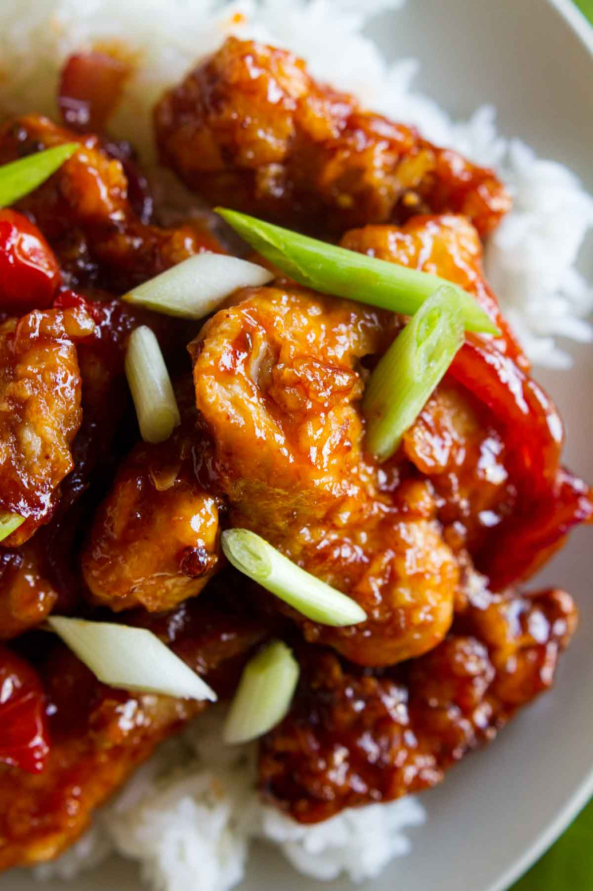

Recipe: Chinese Style Chicken

Description
This is a recipe for that chinese takeout chicken (notably from Panda Express or P.F. Chang's) that seems nearly impossible to replicate, but worry not, it can be done!
The varieties of flavors and additionas to this dish are nearly endless, but I'll cover the basics and leave you to decide the best veggies and sauces/spices to suite your pallet.
Due to the versatility of chicken, this dish becomes extraordinarily adapted to almost any taste (even BBQ sauce if you want to put a southern spin on this, or buffalo sauce for a tasty wing-like dish).
This recipe is not limited to chicken, baked tofu, shrimp, pork, beef, and even cauliflower are great options with the right modifications; this recipe will provide all the steps neccessary to achieve
a fundamental understanding of how to prepare, batter, fry, and sauce/spice your restaurant-teir meal. This recipe will only cover chicken (for now), as more modifications and personal testing are needed
to properly prepare beef and califlower in particular, pork and shrimp are more or less done the same way chicken is.
Ingredients
- 1 chicken breast with rib meat, or 2-3 chicken tenderlions, cubed
- 1 egg, blended
- About a half cup of corn starch
- Fry batter: see this link (optional 1/4 cup of white vinegar for thinner consistency
- 1-3 cups of any veggie or fungus of choice, cut to bite size
- 1 tbsp of soy sauce
- 1 tbsp of chili paste (sambal olek)
- 1 tsp of minced garlic
- About 1 tbsp total of any spice of choice split between spices
- Fry oil (canola, peanut, vegetable)
- 1 tbsp of butter
- 1/4 cup of diced green onion
- 1/4-1/2 cup of sauce of choice, can be hommade
Steps
- To begin, cut all vegetables and protien, and blend the egg. Make fry batter.
- In a medium to large saucepan, add fry oil about halfway to full and begin to heat on medium-high heat. Pre-heat a wok or large pan to medium heat
- Grab a spare bowl or plate to place all veggies on, we'll need them for later
- Place blended egg into a small bowl, then egg wash your chicken chunks
- Grab a mixing bowl and add corn starch. Dust your egg washed chicken until fully coated in starch. Place back on the cutting surface you used in step 1
- Rinse the corn starch from the mixong bowl, dry, and add chicken. Add about half of the batter you made into the mixing bowl with the chicken, and thuroughly integrate by hand (yes, you will have batter hands)
- Bring the bowl over to the heated oil and use tongs or your batter hands to slowly drop the chicken into the oil. Drop from as close as you can to the oil to prevent splashing, and make sure to separate each piece as it drops
- Wash your hands, add butter to wok or pan, add garlic, then add veggies. Add soy sauce.
- Stir veggies occasionally. When the batter is lightly cooked and begins to attach firmly to the chicken, separate any pieces that have formed conglometates. Stir/move them around in the oil slowly, occasionally
- While these are cooking, in a small bowl add sauce, chili paste, and spices and mix thuroughly. Use soy sauce to this if neccessary
- When the veggies and chicken are done, reduce heat in the pan or wok, turn off the heat on the oil, and use tongs or a strainer ladel to remove chicken from oil and into the pan or wok
- Add sauce and stir. Viola! You now have chinese style chicken!
Return to top
Return to main page